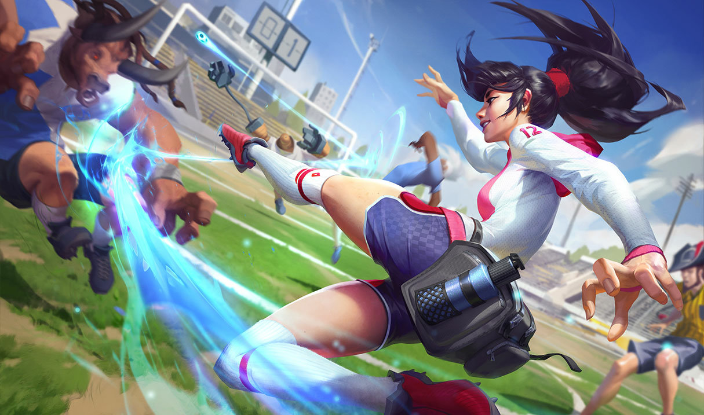
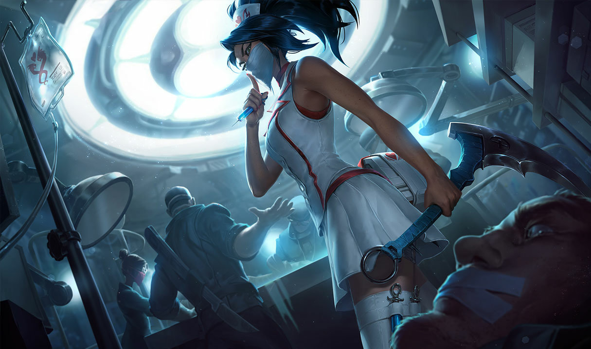

Képességei:
Passzív - Az orgyilkos jele
Ha sebző varázslattal találsz el egy hőst, energiagyűrű jön létre körülötte. A gyűrű elhagyása megnöveli Akali következő alaptámadásának hatótávolságát és sebzését.
Q - Ötpontos csapás
Akali eldob öt kunait, amelyek a bónusz sebzésével és varázserejével arányos sebzést okoznak, és lelassítják a célpontjukat.
W - Homálygömb
Akali füstfelhőt hoz létre, és rövid időre megnő a mozgási sebessége. A füstön belül Akali a Lopakodás hatás alá kerül, és semmilyen ellenséges varázslattal vagy támadással nem célozható meg. Támadáskor vagy a képességeinek használatakor rövid időre láthatóvá válik.
E - Surikenugrás
Hátraszaltózás közben eldobsz egy varázssebzést okozó surikent. Ez megjelöli az elsőként eltalált ellenfelet vagy füstfelhőt. A képesség ismételt aktiválásával a megjelölt célponthoz siethetsz, további sebzést okozva neki.
R - Tökéletes kivitelezés
Akali a kijelölt irányba ugrik, megsebezve az eltalált ellenfeleket. Második aktiválás: Akali a kijelölt irányba rohamoz, kivégezve minden eltalált ellenfelet.
Elérhető hőskinézetek:
Akali

Fullánk Akali

Pokoli Akali

Élsportoló Akali
Nővérke Akali
Vérhold Akali

Ezüstkarom Akali

Fejvadász Akali

Szusi Akali

K/DA Akali

K/DA Akali (tekintély kiadás)

Projekt: Akali

True Damage Akali